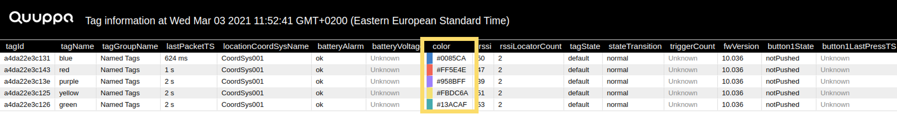
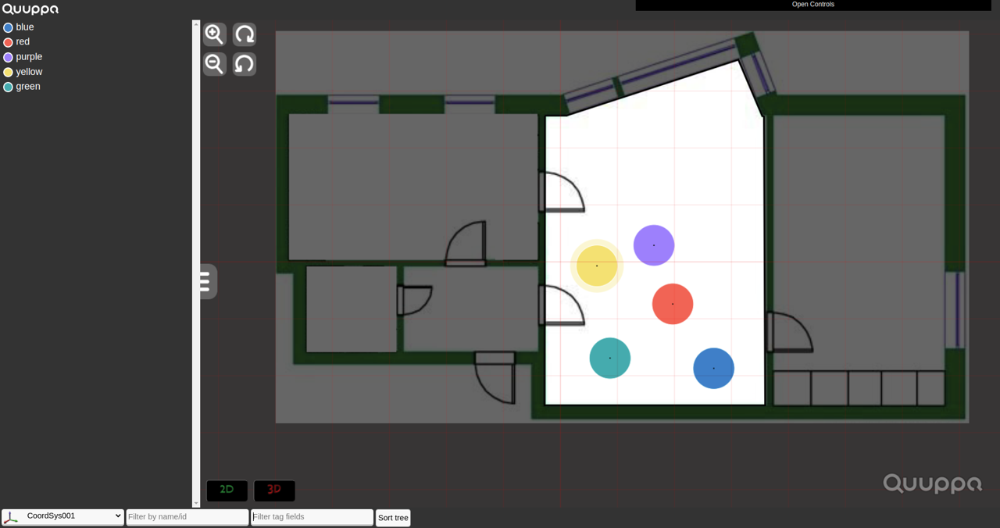

Tags Details Table Definitions
You can find explanations below for the types of information found in each column of the Tag Details table as well as examples of how this information can be used for troubleshooting or system optimisation.
tagId
Shows the unique ID number for the tag and is used to identify specific tags in the project.
The Web Console retrieves this information from the QPE using the Get Tag Data API method.
tagName
Displays the tag name that has been defined in the project file. Tag names can be edited using the Quuppa Site Planner. If you have not defined a tag name for the tag, this will show unknown.
Tag names are used to identify specific tags in the project.
The Web Console retrieves this information from the QPE using the Get Tag Data API method.
tagGroupName
Displays the tag group name that has been defined in the project file for the tag group that the tag belongs to, e.g. Named Tags. Tag group names can be edited using the Quuppa Site Planner.
Tag group names are used to identify tag groups in the project.
The Web Console retrieves this information from the QPE using the Get Tag Data API method.
lastPacketTS
Shows the timestamp of the tag's last packet that was received by the system. This information can be used to troubleshoot tag and network performance issues. For example, if no packets have been received for some time but there is reason to expect that the tag should be in a state that transmits radio packets, it's important to investigate whether it's a problem with the specific tag (e.g. has it run out of battery or been damaged) that need to be fixed.
The Web Console retrieves this information from the QPE using the Get Tag Data API method.
locationCoordSysName
Shows the name of the coordinate system that the tag is currently in. The coordinate system names are defined in the project file and can be edited using the Quuppa Site Planner.
The coordinate system name can be used to troubleshoot system performance issues.
The Web Console retrieves this information from the QPE using the Get Tag Data API method.
batteryAlarm
- ok - battery level is good
- low - battery level is getting low, tag should be replaced soon
- null - this information has not yet been received by the system
This information can be used to troubleshoot tag performance and evaluate whether any tags need to be replaced in the near future.
The Web Console retrieves this information from the QPE using the Get Tag Data API method.
lastBatteryLowTS
Shows the timestamp for the last battery low event.
The Web Console retrieves this information from the QPE using the Get Tag Data API method.
batteryVoltage
Shows the voltage of the tag's battery. This measurement has an accuracy of +-0.2v and can be used to troubleshoot tag performance issues. Null is shown if this information has not yet been received by the system.
The Web Console retrieves this information from the QPE using the Get Tag Data API method.
color
Shows the colour set for the tag in the project file. By default, the colour for all tags in the project is set to red (#FF0000), but can be edited using the Quuppa Site Planner.
Using different colours for the tags is used to visually identify specific tags, for example in the tag details table or in the map view.


The Web Console retrieves this information from the QPE using the Get Tag Data API method.
rssi
Shows the averaged received signal strength indicator (RSSI) value for packets sent by the tag. The values can range from 0-63 dB, with 63 being the strongest signal value indicating that the tag has been within roughly 30 cm of the Locator from which the rssi was received. A value above 40 indicates that the tag has been within 5 m. Null is shown if this information has not yet been received by the system.
This indicator is used to troubleshoot network performance issues.
The Web Console retrieves this information from the QPE using the Get Tag Data API method.
rssiLocatorCount
Shows the number of Locators that have received packets from this tag recently. The information can be used to troubleshoot network performance issues.
The Web Console retrieves this information from the QPE using the Get Tag Data API method.
tagState
Shows the state that the tag is currently in. The possible states are:
- default - The tag is in the defaults state when it's not moving, i.e. the tag's accelerometer has not been triggered.
- temporary - The tag enters the temporary state when it is commanded to do so through the APIs or when it is inside a zone where location based commands are enabled. This state signifies zone-related actions such as the tag LED blinking when it enters a certain area.
- triggered - The tag is in the triggered state when it's moving, i.e. when its accelerometer has been triggered.
- null - This information has not yet been received by the system
Each state defines the tag's behaviour, e.g. how often the tag sends packets and with what transmission power. The tag configurations are defined in the project file and can be edited using the QSP.
This indicator can be used to troubleshoot tag performance.
The Web Console retrieves this information from the QPE using the Get Tag Data API method.
stateTransition
- normal - The tag will not be transitioning into a new state during the next 10 seconds or so.
- aboutToExit - The tag is about to transition to a new state in the next 10 seconds or so.
- null - This information has not yet been received by the system.
triggerCount
Shows an incremental counter to indicate how many times the tag has transitioned into the triggered state. The change of state can be caused by the tag's accelerometer being triggered (i.e. the tag starts moving) or the tag's button being pressed.
This information is used for troubleshooting tag performance issues. For example, to identify whether a tag is not being triggered as often as would be expect for the use case, or conversely is being triggered too frequently, suggesting that either tag configurations or project settings should be adjusted to better suit the use case.
The Web Console retrieves this information from the QPE using the Get Tag Data API method.
fwVersion
Shows the current firmware version of the tag. The information can be used to troubleshoot tag performance and assess whether a firmware upgrade is needed.
The Web Console retrieves this information from the QPE using the Get Tag Data API method.
button1State
- notPushed - The tag's button has not been pushed.
- pushed - The tag's button has been pushed.
- null - This information has not yet been received by the system.
This indicator is used to troubleshoot tag performance, e.g. to check if the tag reacts as expected when the button has been pushed.
The Web Console retrieves this information from the QPE using the Get Tag Data API method.
button1LastPressTS
Shows a timestamp for when the tag's button was last pressed.
This indicator is used to troubleshoot tag performance, e.g. to check if the tag reacts when it's button is pressed. If there is no reaction, then it's important to investigate whether the physical button is broken, the tag has run out of battery or something else is preventing the system from registering the action.
The Web Console retrieves this information from the QPE using the Get Tag Data API method.
txPower
Shows the tag's transmit power in dBm. It can be used to troubleshoot network performance and assess whether action is needed to better manage the air interface load. For more information, please refer to our document Best Practices for Air Interface Load Management.
The Web Console retrieves this information from the QPE using the Get Tag Data API method.
txRate
Shows the tag's transmit rate in Hz. It can be used to troubleshoot network performance and assess whether action is needed to better manage the air interface load. For more information, please refer to our document Best Practices for Air Interface Load Management.
The Web Console retrieves this information from the QPE using the Get Tag Data API method.
ioStates
Shows an array of states for the tag's IO pins. Each element can have one of the following values:
- low - The pin is currently low.
- high - The pin is currently high.
- pulserate0 - The pin pulse rate is performing according to preconfigurations.
- pulserate1 - The pin pulse rate is performing according to preconfigurations.
In practice, this could mean for example that if the tag LED is connected to the pin, low would indicated that the LED is off and high would indicate that the LED is on. Pulserate0 and pulserate1 mean that the LED blinks according to preconfigured rates.
To configure the pulse rates, contact Quuppa Support.
This indicator can be used to troubleshooting tag performance.
The Web Console retrieves this information from the QPE using the Get Tag Data API method.
configStatus
- aborted - The action has been stopped before completion.
- failed - The action was unsuccessful.
- notSupported - The tag model does not support commanding.
- waitingToCommand1of3 - The action is in progress.
- commanding1of3 The action is in progress.
- done - The action has been completed.
- notStarted - The action has not been started yet.
- waitingForPackets - The tag has not been seen by the system for a while.
The Web Console retrieves this information from the QPE using the Get Tag Data API method.